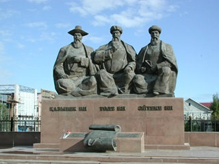
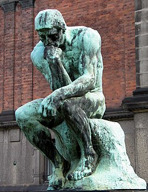

8. Мүсін өнері
Мүсін өнері (скульптура) — бейнелеу өнерінің
бір түрі, онда суретшілер үш өлшемді пішіндер арқылы адамды, жануарларды немесе
басқа да объектілерді бейнелейді. "Скульптура" термині латынның "sculpo" —
"қашаймын", "ойып жасаймын" деген сөзінен шыққан.
Мүсін өнерінің негізгі екі түрі бар:
-
Монументалды мүсін: Бұл түрі қоғамдық орындарда орнатылып, сәулет өнерімен тығыз байланысты болады. Ол ескерткіштер, монументтер және ғимараттардың безендірілуі ретінде көрініс табады.
-
Станокты мүсін: Бұл түрі шағын көлемді болып, көрмелерде, мұражайларда немесе жеке коллекцияларда орналастырылады.
Сонымен қатар, мүсіндер рельеф түрінде де жасалады:
-
Барельеф: Мүсіннің бейнесі жалпы жазықтықтан аздап шығып тұрады.
-
Горельеф: Мүсіннің бейнесі жазықтықтан айтарлықтай шығып тұрады.
Мүсін өнері адамзат тарихында маңызды рөл атқарып, әртүрлі мәдениеттер мен өркениеттердің дамуына үлес қосты. Ежелгі Мысыр, Үндістан, Грекия және Римде мүсін өнері жоғары деңгейде дамыған. Қазақстанда да мүсін өнері өзіндік ерекшеліктерімен танымал, ұлттық мәдениеттің ажырамас бөлігі болып табылады.
